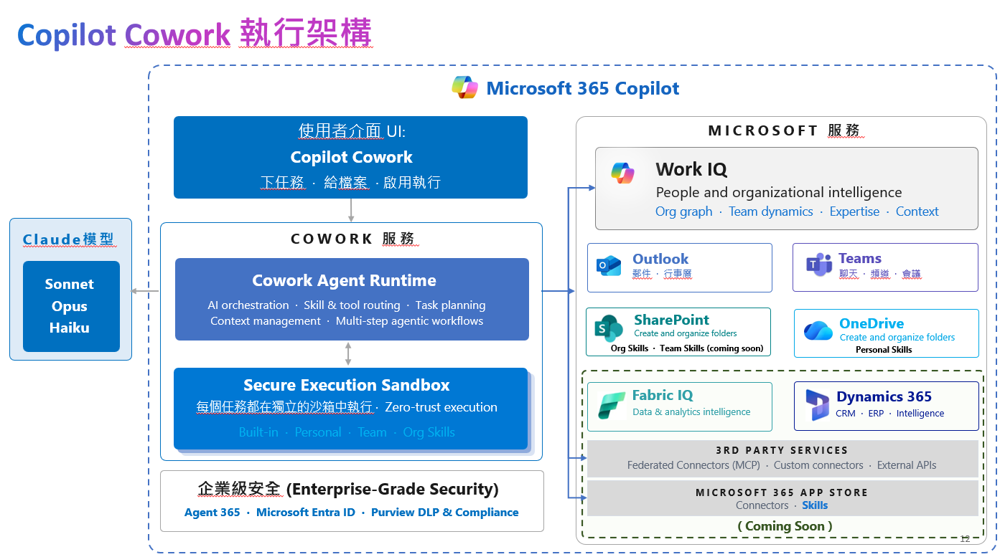

為實際工作情境而生的 AI
從「碎裂的聊天對話」到「無縫的產出」
過去的 AI 只負責說，工作流程還是要用戶自己跑、交付還是要用戶自己完成。
Wave 3 讓 Copilot 成為 AI Doer 和數位員工，直接接收任務並產出成果檔案。
為實際工作情境而生的 AI — 從智慧理解、模型彈性、執行力、自建代理到企業治理
讓 Copilot 能透過記憶與深度理解你的工作流程與商業脈絡，打造專屬於個人與組織的智慧層
讓每個任務和工作流程都能自選最合適的模型
在工作流程中讓 AI 具備執行力，直接將需求轉化為交付成果
在 M365 Copilot 配備 Agent 建置工具，讓用戶都能自行建置代理以符合工作需要
內建企業級用戶權限、資料安全、Copilot 稽核 (Audit) 與治理、絕對不使用客戶資料訓練模型、著作權保護
Work IQ 結合 M365 日常工作的訊號（文件、郵件、會議、Teams、LOB 資料），讓 Copilot 在實際工作狀態下進行理解與推理。
Work IQ 不新增、也不放大任何資料存取風險。
使用者角色、合作關係。Work IQ 理解「你的角色、和誰在做事、誰是關鍵角色、什麼事情最重要」— 不是對人的績效或行為進行監控。
目前工作狀態、任務階段。不只看你現在問了什麼，而是理解這件事情是剛開始、進行中、已決策、還是準備收尾，合理的下一步是什麼。
結合文件、郵件、會議、Teams 對話，以及已治理的業務系統 (LOB) 資料。資料存取嚴格遵循使用者既有的存取權限。
最新 OpenAI 模型 (GPT 5.2 - 5.4) 全面可用 · Anthropic Claude 已可在 Copilot Chat、Researcher、Cowork Agent 使用，並擴展至各 M365 Apps
最新 OpenAI 模型均可在 M365 Copilot 中全面使用，創意生成、多模態、簡報、Email 等大量日常工作自動化的首選。
已可在 Copilot Chat、Researcher Agent、Copilot Cowork Agent 使用，並開始擴展至各 M365 Apps。長文檔、合約審閱、研究分析的首選。
GPT 起草初版 → Claude 審閱正確性、完整性與引用 → 最終交付給用戶。在 DRACO 基準測試上，表現優於所有競爭對手 +13.88%。
DRACO Benchmark = Deep Research Accuracy, Completeness, and Objectivity (衡量研究成果的真實性、完整性、客觀性、引用品質)。50+ = 已達「可交付、可決策參考」的研究品質。Researcher with Critique 是現階段最接近專業、最值得信任、可支援決策的 AI 研究。
當任務涉及高風險決策或需要多角度驗證時，M365 Copilot 會召集多個模型組成「模型委員會」— 各自獨立分析、交叉審閱、最終匯聚為更可靠的結論。
同一個問題交由 GPT、Claude 等多個模型各自獨立分析，避免單一模型的盲點與偏誤。
模型之間互相審閱彼此的輸出，針對不一致之處提出質疑與修正，提升結論的可靠性。
將多模型的觀點彙整為一份經過驗證的結論，適用於合約審閱、風險評估、策略建議等高風險場景。
不只會聊天，Cowork 直接把事情做完。規劃任務、跨工具與檔案推理、把工作持續推進到完成。
與 Anthropic 合作打造，將 Claude 級代理能力引入 Microsoft 365 工作系統。
Cowork Agent 會規劃任務、跨工具和檔案的理由，並把工作持續推進到完成。
工作執行過程透明、進度可審查，並設有引導或阻止執行的護欄。
直接理解你的工作，而不是只有資料連結器試圖拼湊上下文。
在 Microsoft 安全、身分與治理體系內運作，確保能大規模採用。

使用者在熟悉的 M365 介面下達任務指令 — 工作週、知識庫、開發、人力資源、研究等情境一次涵蓋,不必離開現有工作流程。
由 Claude 系列模型(Sonnet、Opus、Haiku)驅動的代理執行核心 — 負責 AI 編排、技能與工具串接、任務規劃與長時間多步驟工作的持續推進。
每個任務都在獨立、受治理的安全沙箱中執行,防止互相干擾;結果可被審查、可回溯,並完整保留稽核軌跡。
Cowork 紮根於 Work IQ:理解組織圖、合作關係、業務脈絡。資料來源涵蓋 Outlook、Teams、SharePoint、OneDrive、Fabric IQ 與 Dynamics 365,並遵循使用者既有的權限設定。
透過 Microsoft 365 App Store 整合第三方服務與 Line of Business 系統,讓 Cowork Agent 能跨企業既有工具鏈執行任務(陸續上架中)。
Agent 身分識別 · Microsoft Entra ID · Purview DLP & Compliance — 所有 Cowork 執行都在 M365 信任邊界內,完整套用企業既有的身分、權限與合規政策。
M365 Copilot 中的超強 AI 生產力助理 — 每次對話開始時自動參考使用，完成用戶交付的任務。
整合行事曆、信件與 Teams，產出當日重點或新聞總覽。
安排會議、準備會議、智慧分析與工作洞察，提供會前背景資料。
搜尋整個組織的資料。
整理行程、婉拒低優先項目、守護專注時間。
跨多個來源進行深度研究，彙整複雜主題的全面解答與分析。
產出報告、備忘錄與信件，支援人與AI的追蹤修訂與註解。
建立公式、財務模型、圖表，並清理雜亂資料。
從零打造或修改投影片，內含設計指引與視覺品管。
合併、拆分、擷取文字、填寫表單與 OCR 掃描。
在對話中產生具有結構化版面、按鈕與資料顯示的互動式卡片回應。
將簡報、報告等內容轉化為可互動瀏覽的單頁式網頁，支援圖表動畫與響應式設計。
使用者可自行建立專屬技能，定義工作流程與指令模板，讓 Cowork 依需求擴充能力。
點擊下方分頁切換不同情境的 Cowork Agent 實機演示 — 從專案規劃、跨工具自動化到端到端工作流程
把影片檔放到 videos/ 資料夾並命名為：
videos/cowork-agent-1.mp4
展示 Cowork Agent 如何規劃專案任務、跨 Outlook、Excel、SharePoint 等工具完成複雜的多步驟工作流程。
把影片檔放到 videos/ 資料夾並命名為：
videos/cowork-agent-2.mp4
進階情境演示 — 從會議摘要、資料分析到報告產出的端到端自動化。
把影片檔放到 videos/ 資料夾並命名為：
videos/cowork-agent-3.mp4
從生成內容到上線發佈 — Cowork 串接外部服務，讓任務真正交付到雲端。
專為工作設計的 AI Agents 協助企業透過代理程式自動化任務
正式推出 — 深度研究
正式推出 — 進階推理分析師
端到端問卷管理
多語翻譯 · 即時口譯
Teams 會議主持管理
文件建立與迭代
資料視覺化與洞察
建立並反覆迭代簡報
提示撰寫助教
自動化 App 建置
自動化專案/任務管理
內容管理 & 組織
點擊下方分頁切換不同 Microsoft Agent 的實機演示
把影片檔放到 videos/ 資料夾並命名為:
videos/researcher-agent.mp4
GPT 起草初版 → Claude 審閱正確性、完整性與引用 → 最終交付。在 DRACO 基準測試表現優於所有競爭對手 +13.88%。
把影片檔放到 videos/ 資料夾並命名為:
videos/word-agent.mp4
從零打造或迭代 Word 文件 — 報告、備忘錄、合約、提案,支援人與AI的追蹤修訂與註解。
把影片檔放到 videos/ 資料夾並命名為:
videos/excel-agent.mp4
建立公式、財務模型、圖表並清理雜亂資料 — 用對話完成 Excel 中最耗時的工作。
把影片檔放到 videos/ 資料夾並命名為:
videos/ppt-agent.mp4
從零打造或修改投影片 — 內含設計指引與視覺品管,讓主管的提案級簡報變成幾分鐘的事。
把影片檔放到 videos/ 資料夾並命名為:
videos/app-builder-agent.mp4
用對話式描述自動建置企業內部小工具與輕量應用 — 不寫程式碼也能交付,讓 IT 與業務同步前進。
Copilot 不只是 AI 工具,更是內建於 M365 信任邊界內的安全資產 — 從資料保護、AI 安全、合規隱私到管理控制,一條完整的企業治理鏈
保護與管理 Copilot 使用的工具 — 解決過度分享疑慮、提升敏感內容曝光可視性、修復過多權限、防止 Copilot 處理機密檔案。
防範資料遺失與內部風險 — 取得有關風險行為及 AI 使用的警示與報告,保護敏感檔案與互動,根據風險行動動態套用安全政策。
治理 AI 以符合法規與政策 — 檢查互動內容與稽核日誌、調查合規及倫理違規、執行生命週期政策與法律保留 (Legal Hold)。
執照與計量、配置與自訂、整合、衡量與報告、準備與採用 — 完整的 IT 治理工具鏈,讓 Copilot 在組織內的部署可控、可量、可審。
所有 Copilot 互動運行於 M365 信任邊界內,絕不使用客戶資料訓練模型。
完整套用使用者既有的身分、權限與條件式存取政策,無需重建。
透過 Purview DLP、敏感度標籤與資訊保護,自動阻止敏感資料外洩。
所有 Copilot 互動可審查、可回溯,支援法律保留 (Legal Hold) 與電子取證 (eDiscovery)。
符合 ISO 27001、ISO 42001、SOC 2、GDPR、HIPAA 等全球主要合規標準。
Microsoft Customer Copyright Commitment 為企業承擔 Copilot 產出的著作權侵權風險。
每一個 Wave 3 的支柱，都是回應一個真實的客戶痛 — 不是賣產品，是解問題
客服每次都要重翻歷史紀錄；工程師找不到去年同類設計規格；專案經理找不到上次同類專案的 SOW；HR 每日有整理不完的面試紀錄。
Work IQ 自動連接企業資料、理解用戶資訊、清楚企業工作脈絡。
WORK IQ合約審閱想用 Claude、行銷發想想用 GPT、業務想用 NotebookLM 做簡報 — 各買各的、各管各的，成本與管理失控。
GPT 5.2 - 5.4、Claude Opus / Sonnet / Haiku 都內建可用。
MULTI-MODEL業務要的是「報價單做出來」；主管要的是「月報整份產出」 — 而不是聊天，是交付成果。
Cowork Agent 規劃任務、跨工具理由、把工作推進到完成。
AGENTIC WORK + COWORKHR、法務、業務都想要自己的 agent，但 IT 沒人寫得動 — 需求多、人力少。
內建 Agent Builder 並整合 Copilot Studio User Right 實現 AI Agent 自動化。
AGENT BUILDER員工偷偷用個人 ChatGPT，公司資料就漏出去了。CIO 擔憂資料能不能安心被使用。
商業機密保護、絕不用於模型訓練、ISO42001 合規、Copilot 著作權保障。
SECURITY & MANAGEMENT跨產業、跨規模 — 這些客戶不是試水溫，是已經把 Copilot 變成日常工作流程的一部分。
近 70% Fortune 500 已將 Copilot 整合進工作流程（Microsoft 公開資料 2025）
不是承諾，是已被衡量的實績 — 三項來自獨立研究與大規模部署的可量化證據
資料來源：Forrester Total Economic Impact Of Microsoft 365 Copilot (Mar 2025) ｜ UK Government × Microsoft Joint Study (Jun 2025) ｜ Microsoft Customer Stories 2025
從盤點到量化 ROI — 讓 Copilot 不只是買來，而是真的被用起來
面對相同的 Claude 模型，差別在「組織智慧、雲端原生、安全與治理」— 企業規模的關鍵能力
兩個模型各有優勢，M365 Copilot 讓你依任務自動或手動切換 — 不用押寶單一模型
取代零散難管理的 3rd party AI：Perplexity + Zoom AI + Claude + ChatGPT + Gemini + Canva + n8n + Nano Banana = $50–100 / 使用者 / 月